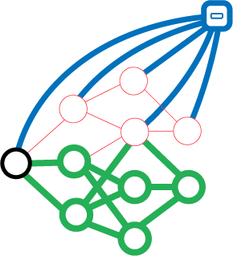
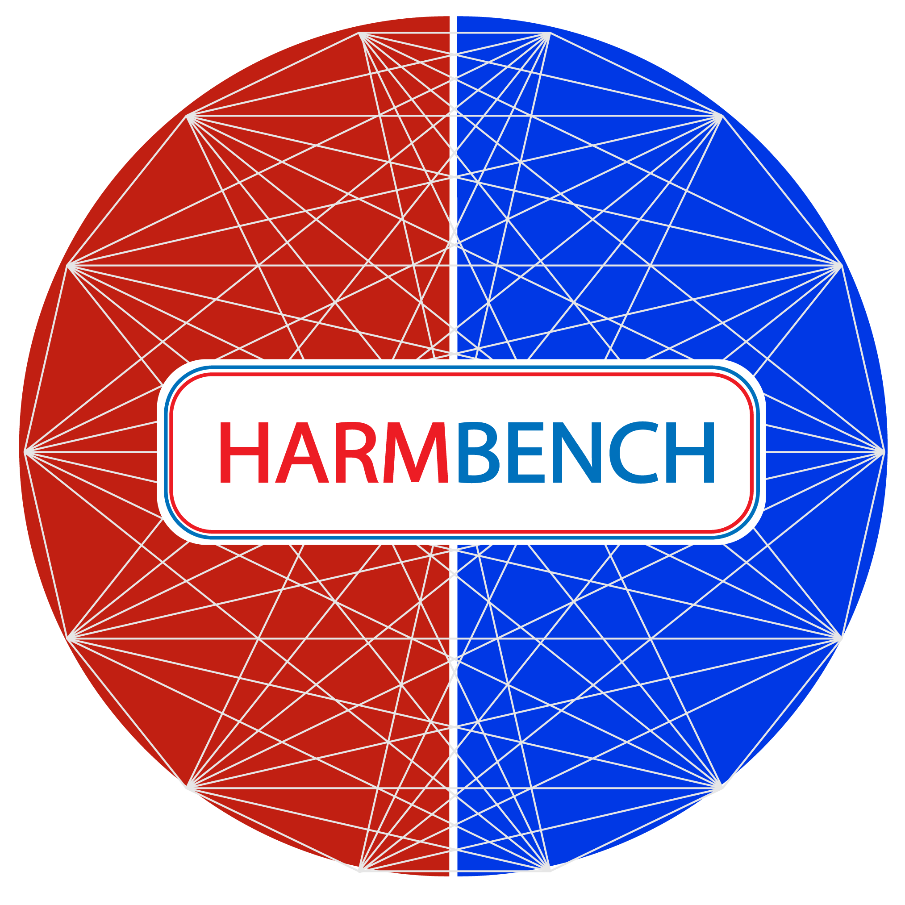

Hi, I'm currently a Research Engineer at Center for AI Safety, working with Dan Hendrycks. I am interested in AI Safety.
I received a B.S in Computer Science from Case Western Reserve University in 2023. During my undergraduate studies, I worked with Trieu H. Trinh and Minh-Thang Luong (DeepMind).
Fun facts: I reached Rank #1 Amumu in North America twice (2023 & 2026) — Amumu is a League of Legends champion. I also play tennis. And I published my first Nature paper at age 25 — I'm the first author of Humanity's Last Exam, which I currently maintain as HLE-Rolling.
Selected Research [Google Scholar]
-
Humanity's Last Exam
Long Phan, Alice Gatti, Ziwen Han, Nathaniel Li, Josephina Hu, Hugh Zhang, { with 700+ co-authors } (see full list),
Summer Yue, Alexandr Wang, Dan Hendrycks
[Nature (Nature 649, 1139–1146)] [Related Articles: NYTimes,
Science]
-
Reducing Political Manipulation with Consistency Training
Long Phan*, Devin Kim*, Alexander Pan, Alice Blair, Adam Khoja, Dan Hendrycks
[arXiv | Code | Site ]
-
CAIS AI Dashboard
Long Phan, Dan Hendrycks 
Improving Alignment and Robustness with Circuit Breakers
Andy Zou, Long Phan, Justin Wang, Derek Duenas, Maxwell Lin, Maksym Andriushchenko, Rowan Wang, Zico Kolter, Matt Fredrikson, Dan Hendrycks
[ Code | Site]-

HarmBench: A Standardized Evaluation Framework for Automated Red Teaming and Robust Refusal
Mantas Mazeika, Long Phan, Xuwang Yin, Andy Zou, Zifan Wang, Norman Mu, Ellie Sakhaee, Nathaniel Li, Steven Basart, Bo Li, David Forsyth, Dan Hendrycks
[ Code | Site] -
Representation Engineering: A Top-Down Approach to AI Transparency
Andy Zou, Long Phan, Sarah Chen, James Campbell, Phillip Guo, Richard Ren, Alexander Pan, Xuwang Yin, Mantas Mazeika, Ann-Kathrin Dombrowski, Shashwat Goel, Nathaniel Li, Michael J. Byun, Zifan Wang, Alex Mallen, Steven Basart, Sanmi Koyejo, Dawn Song, Matt Fredrikson, Zico Kolter, Dan Hendrycks
[ Code | Demo | Fox News] - 🌸 Enriching Biomedical Knowledge for Low-resource
Language Through Large-Scale Translation EACL 2023
{ Long Phan, Tai Dang, Hieu Tran, TH Trieu }, Vy Phan, Lam Chau, Minh-Thang Luong
[ Code ] - 🌸 MTet: Multi-domain Translation for English and Vietnamese
{ Chinh Ngo, TH Trieu, Long Phan, Hieu Tran }, Hieu Nguyen Minh-Thang Luong
[ Code | Blog ] - 🤗 BLOOM: A 176B-Parameter Open-Access Multilingual Language
Model
Teven Le Scao, Angela Fan, Christopher Akiki, ... , Long Phan, ... , Thomas Wolf
[ Code ] - ViT5: Pretrained Text-to-Text Transformer for
Vietnamese Language Generation NAACL SRW 2022
Long Phan, Tai Dang, Hieu Tran, Hieu Nguyen, TH Trieu
[ Code | Blog ] - CoTexT: Multi-task Learning with Code-Text
Transformer ACL NLP4Prog 2021
Long Phan, Hieu Tran, Daniel Le, Hieu Nguyen, James Anibal, Alec Peltekian, Yanfang Ye
[ Code ] - Scifive: a text-to-text transformer model for biomedical
literature arXiv preprint
Long Phan, James Anibal, Hieu Tran, Shaurya Chanana, Erol Bahadroglu, Alec Peltekian, Grégoire Altan-Bonnet
[ Code ]
Achievements
.png) Rank Master in League of Legends (top 0.3%), Season 2023:
Rank Master in League of Legends (top 0.3%), Season 2023:
- 🥇 Rank 1 Amumu in North America (Rank 3 globally)
- 🥉 Rank 3 Gragas in North America